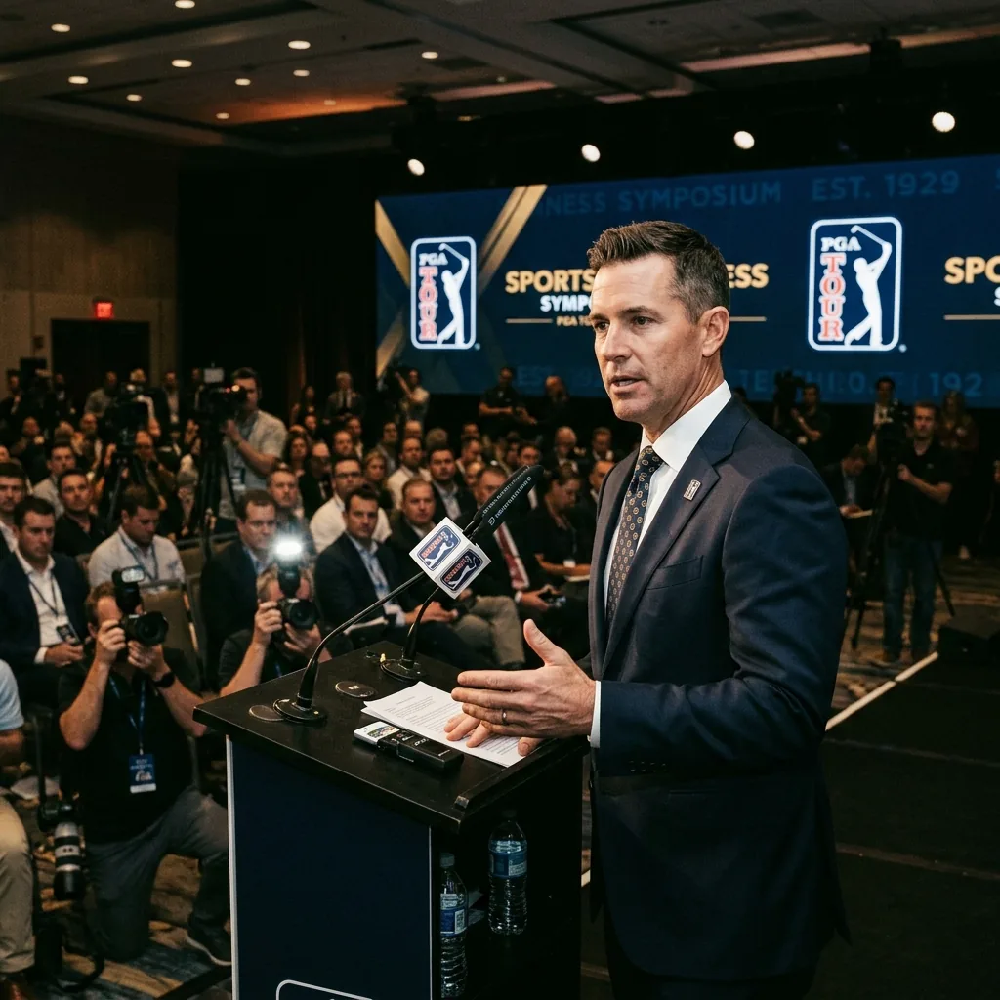

Quick answer: The PGA Tour has elected CEO Brian Rolapp as its next commissioner, and he will add the title on January 1, 2027. He takes over from Jay Monahan, who retires at the end of 2026 after nearly a decade in the role. Rolapp, who joined the Tour from the NFL just over a year ago as its first-ever CEO, will now hold both jobs, making him unambiguously the most powerful person in professional golf. The announcement came the same day the Tour unveiled its sweeping new 2028 structure.

Here is what happened, who Rolapp is, and what it means for the Tour.
What Exactly Was Announced?
The PGA Tour's boards voted to make Brian Rolapp the next commissioner. Board chairman Joe Gorder revealed the decision at the Travelers Championship, near the end of the same press conference where Rolapp laid out the Tour's new two-series model for 2028.
The timing matters. Rolapp keeps his CEO role and adds commissioner on top of it, effective January 1, 2027. As Gorder put it, the board did not want any ambiguity about who runs the organization. Stacking both titles on one person settles that question completely. Rolapp is in charge, full stop.
Who Is Brian Rolapp?
He is a sports business executive who came to golf from the NFL, where he spent 22 years and rose to become the league's chief media and business officer. In that job, he was the architect behind the NFL's massive media deals, negotiating landmark agreements with the major networks and streamers, and launching digital platforms that expanded the league's reach.
The PGA Tour hired him in June 2025 as its first-ever CEO, a brand-new position created to modernize the business side of the operation. A graduate of BYU and Harvard Business School, Rolapp, 54, was brought in specifically for his track record of scaling sports businesses in a fast-changing media landscape. In just over a year, he has clearly become the driving force behind the Tour's direction.
Why Is Jay Monahan Leaving?
By his own plan, and on his own timeline. Monahan, 56, informed the boards a year ago that he intended to step down at the end of 2026, after completing a decade as commissioner. He took over the job from Tim Finchem in 2017, so this is the planned conclusion of a ten-year run, not a sudden ouster.
Over the past year, Monahan has gradually handed day-to-day control to Rolapp while focusing on his board roles and managing the transition. Gorder described the handover from Monahan to Rolapp as a textbook transition, with Monahan staying on to support his successor right through the end of the year.
How Will Monahan's Tenure Be Remembered?
As a mixed bag, honestly. On the positive side, Monahan negotiated a major increase in the Tour's television deal and steered a smooth return to play after the COVID-19 shutdown, both real accomplishments that strengthened the Tour financially.
But his legacy is complicated by one enormous moment. In June 2023, Monahan lost the trust of many players when the Tour secretly reached a framework agreement with Saudi Arabia's Public Investment Fund, the money behind rival LIV Golf, after publicly opposing it for years. The backlash was severe, and it dogged the rest of his tenure. So Monahan leaves having grown the Tour's business considerably, while also being the commissioner who navigated, and was bruised by, the most divisive chapter in modern golf.
Why Does This Move Matter?
Because it consolidates power at the exact moment the Tour is reinventing itself. Rolapp announced the 2028 restructure and was confirmed as the next commissioner on the same day. That is not a coincidence. It signals that the person who designed the Tour's future is also the person who will be fully accountable for delivering it.
There is also a symbolic shift here. Monahan was a golf insider who rose through the Tour's ranks. Rolapp is an outsider, a media and business operator from the NFL, the most commercially successful league in American sports. Handing him both titles tells you the Tour sees its future as much about media, money, and modernization as about the golf itself. Whether that is the right bet is the open question, but the direction is unmistakable.
What Happens Next?
Rolapp becomes the fifth commissioner in PGA Tour history on January 1, 2027, joining a short list that runs from Joe Dey to Deane Beman to Tim Finchem to Jay Monahan. He inherits a Tour that is, by its own description, more stable than it has been in years: the LIV Golf war has cooled, the long-term structure is set, and the financial backing is strong.
In practical terms, the next year is a handover. Monahan finishes out 2026 supporting the transition, Rolapp keeps building toward the 2028 changes, and on New Year's Day 2027 the titles formally become his. After that, the era of professional golf that Rolapp has been quietly shaping for a year becomes, officially and completely, his to run.
The Raw Read
This was the least surprising big announcement of the day, and that is the point. Rolapp has obviously been running the show since he arrived, so making him commissioner just put the title where the power already was. The Tour even admitted as much, saying it wanted no ambiguity about who is in charge.
The honest read is that this is a clean, sensible handover at a stable moment, which is a rarity in recent golf. Monahan leaves on his own terms after a decade defined by both real growth and a trust-shattering Saudi deal. Rolapp inherits a Tour that has stopped fighting for its life and started planning its future. Whether an NFL media executive turns out to be the right person to lead a golf tour is something only the next few years will answer. For now, the most powerful job in the sport belongs, officially, to one man with a clear plan and no one above him.
Frequently Asked Questions
Who is the new PGA Tour commissioner?
Brian Rolapp, the Tour's current CEO, who was elected to add the commissioner title effective January 1, 2027.
When does Jay Monahan leave?
Monahan retires at the end of 2026, completing a decade as commissioner, and will support the transition until then.
Will Brian Rolapp still be CEO?
Yes. He keeps the CEO role and adds commissioner on top of it, holding both titles.
What is Brian Rolapp's background?
He spent 22 years at the NFL, rising to chief media and business officer, and architected the league's major media deals before joining the PGA Tour as its first CEO in June 2025.
Which number commissioner is Rolapp?
The fifth in PGA Tour history, following Joe Dey, Deane Beman, Tim Finchem, and Jay Monahan.
Why is this announcement significant?
It consolidates power in one leader at the same time the Tour unveiled its sweeping 2028 restructure, making Rolapp fully accountable for the future he designed.